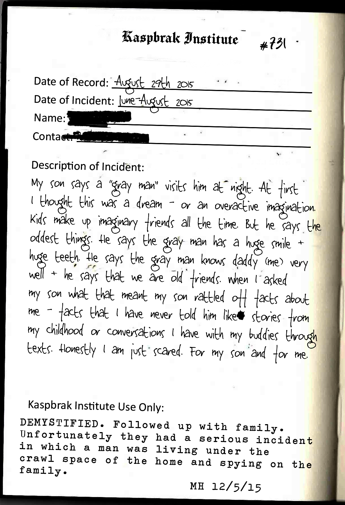

Date of Record: August 29th, 2015
Date of Incident: June-August 2015
Name: [REDACTED]
Contact: [REDACTED]
My son says a “gray man” visits him at night. At first
I thought this was a dream - or an overactive imagination.
Kids make up imaginary friends all the time. But he says the
oddest things. He says the gray man has a huge smile +
huge teeth. He says the gray man knows daddy (me) very
well + he says that we are old friends. When I asked
my son what that meant my son rattled off facts about
me - facts that I have never told him like, stories from
my childhood or conversations I have with my buddies through
texts. Honestly I am just scared. For my son and for me.
Kaspbrak Institute Use Only:
DEMYSTIFIED. Followed up with family.
Unfortunately they had a serious incident
in which a man was living under the
crawl space of the home and spying on the
family.
MH 12/5/15
